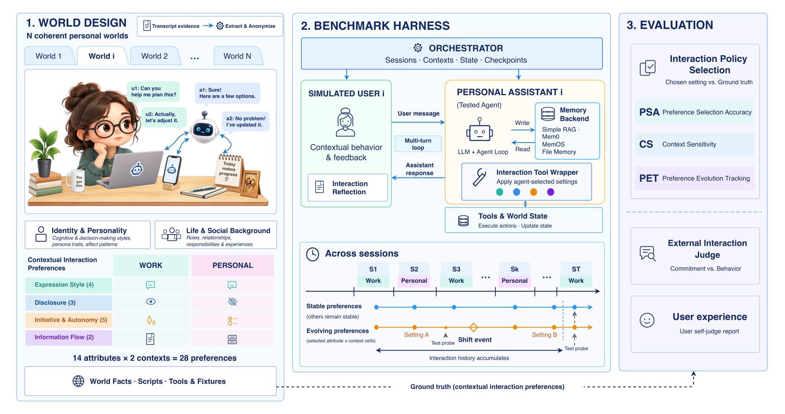

MemPABench
Why Bother Me Again? Benchmarking Personal Assistant Memory for Interaction Preferences
New York University Abu Dhabi
* Corresponding author · jl10897@nyu.edu
Memory systems remember what you said, not how you want to be helped.
Abstract
Personal intelligence systems are taking on increasingly complex everyday tasks, yet repeated questions, unnecessary confirmations, and unwanted outreach can turn capable assistance into interaction burden. Reducing this burden requires assistants to remember how users want to be assisted, but existing memory benchmarks focus on factual recall and personalized answers and rarely test how assistants learn and act on interaction preferences. We introduce MemPABench, an interactive environment for on-policy evaluation of memory in personal assistants. MemPABench poses long-horizon tasks requiring assistants to decide when to clarify, confirm, or act autonomously. Four grounded simulated users hold 14 preferences across work and personal contexts. Their feedback spans 99 sessions over four months, with five event-driven changes per user testing memory updates. We evaluate preference selection, delivered behavior, and sensitivity to context and preference change. Evaluating four memory systems across four LLM backbones, we find that current memory brings limited gains in preference selection. Retrieval-based systems (i.e. Mem0, MemOS, simple RAG), do not outperform a memoryless assistant, while File-based memory improves accuracy but applies preferences beyond relevant contexts. Our analysis shows that current memory struggles to retrieve interaction preferences and adapt to preference changes. Even with the correct preference available, overriding the assistant's default interaction habits remains challenging. The environment and dataset will be available on this page soon.

BibTeX
@misc{li2026mempabench,
title = {Why Bother Me Again? Benchmarking Personal Assistant Memory for Interaction Preferences},
author = {Li, Jialin and Chen, Zhenhao and Luo, Hanjun and Salam, Hanan},
year = {2026},
url = {https://mempabench.com}
}